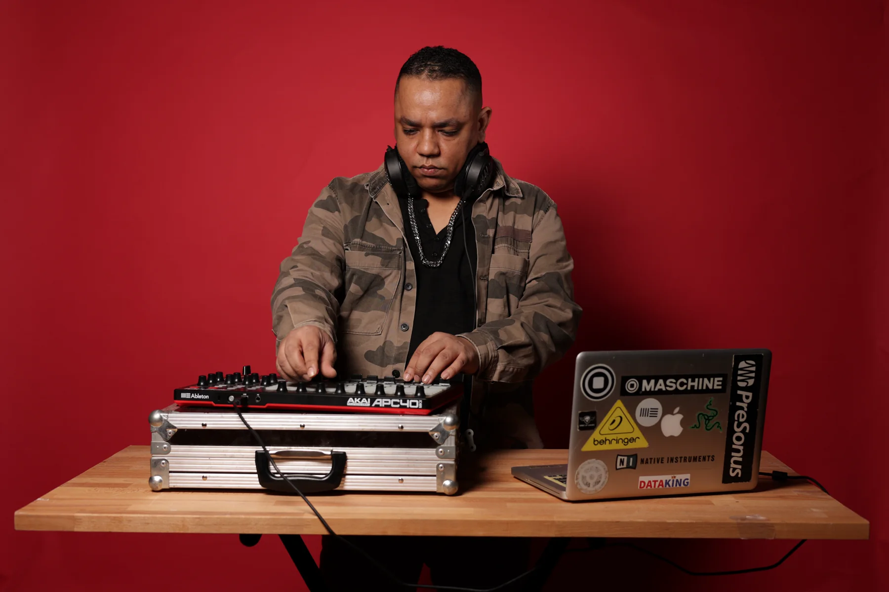
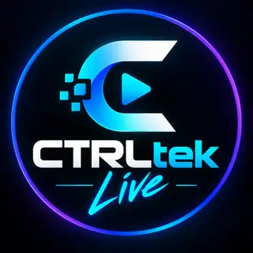

Creative Services
Production, arrangement, artwork, mastering, EPK, identité visuelle, release assets, conseil et visualizers pour construire un projet solide.
Explorer CREATE →Electronic Artist Ecosystem
CREATE · RELEASE · PERFORM
CTRLtek.Live accompagne les artistes électroniques de l'idée au public : développe ton son, transforme tes morceaux en sorties professionnelles et fais vivre ta musique sur scène.
Inscription gratuite · Ouvert dans le monde entier · Conçu pour les artistes électroniques
CTRLtek.Live
Production, arrangement, artwork, mastering, EPK, identité visuelle, release assets, conseil et visualizers pour construire un projet solide.
Explorer CREATE →Rejoins la communauté puis soumets ta démo à l'A&R. Une validation artistique ouvre le pipeline de sortie du label.
Explorer RELEASE →Booking, DJ sets, live sets, showcases, controllerism, captations et opportunités scéniques pour faire vivre le projet devant un public.
Explorer PERFORM →Fondateur / Direction artistique
Producteur, DJ et live performer basé à Toulouse, IssamFire développe un univers techno mélodique, sombre, industriel et hypnotique. Son catalogue comprend notamment des sorties chez G-Mafia Records et BeatCode.
CTRLtek.Live transforme cette expérience de production, de release et de performance en un écosystème ouvert pour accompagner les artistes du studio à la scène.

Direction artistique et développement de l'écosystème CTRLtek.Live.
CREATE / Creative Services
Production, arrangement, artwork, feedback, mastering, EPK, release assets, identité visuelle et visualizers. Des services modulaires pensés pour aider les artistes à transformer une idée en projet exploitable.
RELEASE / CTRLtek Records
Deux conditions : être membre de la communauté et envoyer une démo à l'A&R pour validation. Acheter un service n'influence jamais la décision A&R.
PERFORM / Management + Live
CTRLtek.Live développe le passage de la release à la scène : booking, DJ sets, live sets, showcases, controllerism, performances collaboratives, captations et partenariats événementiels.

La scène fait désormais partie du cœur de CTRLtek.Live. L'objectif : transformer un projet musical terminé en expérience publique, visible et bookable.
Controllerism 01
Controllerism 02
Discover
Join Free
L'accès à la communauté est gratuit et ouvert aux artistes électroniques du monde entier. Aucun abonnement n'est nécessaire pour rejoindre la communauté, soumettre une démo ou être considéré pour une opportunité de booking.
Le formulaire de candidature détaillé sera connecté ici à la base de candidatures CTRLtek.